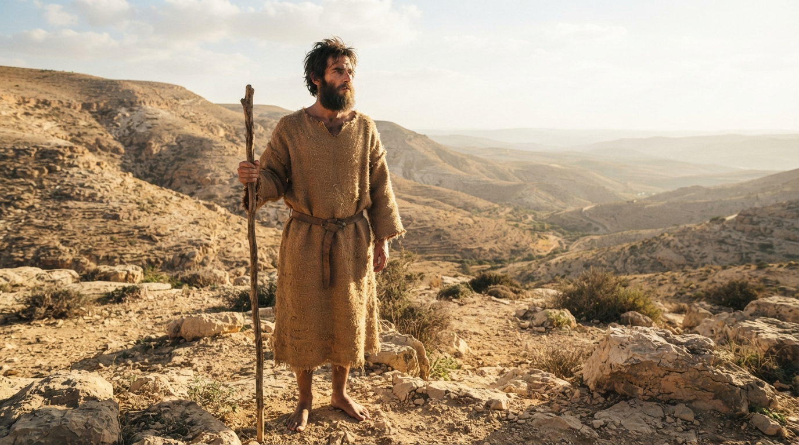
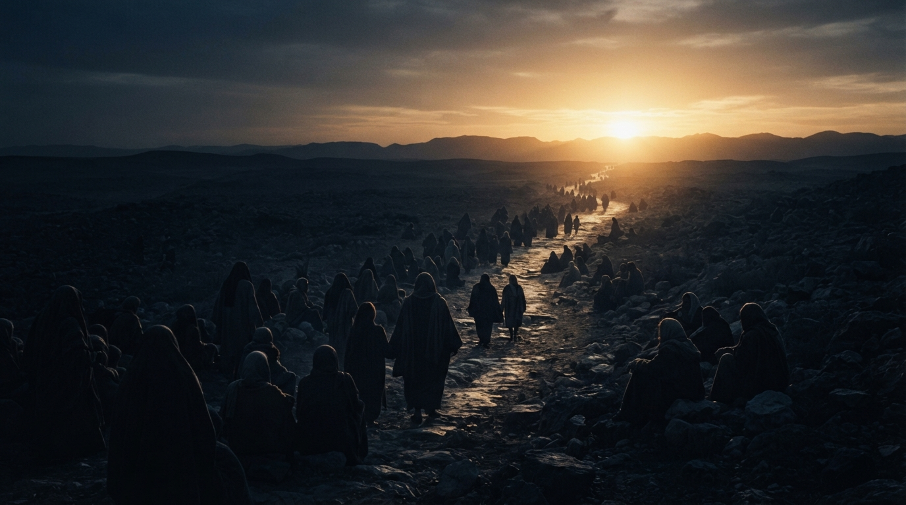

1:67
聖靈充滿，撒迦利亞說預言
他父親撒迦利亞被聖靈充滿了，就預言說：
經文解釋
撒迦利亞在經歷上帝的管教與應許成就之後，被聖靈充滿，開始宣告上帝的作為。這不是撒迦利亞單純表達個人的宗教感想，而是在聖靈引導下宣告上帝正在成就的救恩。
亮點：真正的信仰不是人自己發明出來的，而是聖靈使人看見上帝已經成就的救恩。
撒迦利亞被聖靈充滿所發出的預言， 不只是為兒子約翰出生而歡喜， 更是在宣告上帝信實守約， 並且正在歷史中成就祂所應許的救恩。
撒迦利亞在經歷上帝的管教與應許成就之後，被聖靈充滿，開始宣告上帝的作為。這不是撒迦利亞單純表達個人的宗教感想，而是在聖靈引導下宣告上帝正在成就的救恩。
撒迦利亞首先稱頌「主以色列的上帝」。救恩的主體是上帝，而不是人的能力。「眷顧」表示上帝親自介入、看顧並施行拯救。
「角」在聖經中常象徵力量、權柄、得勝與庇護。「拯救的角」指向上帝所興起、有能力完成救恩的君王。
" 神在大衛的家族中，為我們興起了一位大有能力、滿有權柄、能讓我們藏身得救的君王救主。"
基督的降臨不是突然出現的事件。上帝早已藉著先知，在舊約歷史中逐步啟示祂的救贖計畫。
當時以色列人可能期待政治上的解放，但耶穌所帶來的救恩遠遠超過政治自由。基督真正要處理的是罪、死亡、撒但以及人與上帝隔絕的問題。
撒迦利亞將眼前發生的事情，放在上帝長久的立約關係中來理解。上帝不是隨意行事，而是忠實履行祂的應許。
救恩計畫可以一路追溯到亞伯拉罕。從亞伯拉罕、大衛，一直到基督，上帝的應許逐步實現。
上帝救人不是單純讓人得到更舒服的人生。救贖的目的，是讓我們能夠在祂面前，以聖潔、公義事奉祂。
約翰的使命非常清楚：「行在主的前面，預備他的道路。」他不是救主，而是為救主預備道路的先知。
這裡直接指出救恩的核心：「罪得赦免」。福音最深的問題不是如何讓人生更成功，而是罪人如何與聖潔的上帝和好。
救恩的根源不是人的功德，而是上帝憐憫的心。「清晨的日光」預示上帝的救恩即將臨到祂的百姓。
黑暗象徵罪、無知、死亡與沒有盼望。光則象徵上帝的真理與救恩。撒迦利亞所宣告的「清晨的日光」，最終在耶穌基督裡得到完全實現。
約翰逐漸長大、心靈強健，在曠野中等待上帝所定的時候。曠野也成為約翰預備自己、等候上帝差遣的重要地方。
撒迦利亞看見約翰的出生，卻沒有把焦點停留在自己的家庭，而是看見上帝正在實現祂長久以來的救贖計畫。
上帝記念與亞伯拉罕、大衛所立的約。
上帝興起救主，為祂的百姓施行救贖。
約翰不是基督，而是預備主道路的先知。
上帝的憐憫使人從罪與死蔭中，走向光明與平安。
撒迦利亞不是只從「孩子出生」來看這件事，而是把它放進幾百年的救贖歷史中。
上帝曾與亞伯拉罕立約，又向大衛應許永遠的國度。如今這些應許正在基督裡逐步實現。
上帝應許藉著他的後裔，使萬國得福。
上帝建立祂的百姓，在歷史中持續啟示祂自己。
上帝應許大衛，他的國位與彌賽亞應許相連。
約翰成為至高者的先知，預備主的道路。
上帝所應許的救主來到，在祂裡面完成救贖。

約翰是非常重要的人物，但他從來不是救恩的中心。
他的使命只有一個方向：預備主的道路。

路加福音 1:79 將人的處境描繪成「黑暗」與「死蔭」。
這不是單純的人生低潮，而是罪、死亡與與上帝隔絕的狀態。
但上帝的憐憫使「清晨的日光」臨到我們。
約翰是預備道路的人，撒迦利亞是宣告的人，但真正完成救恩的是耶穌基督。
因此整段經文最後的焦點，不應停留在約翰，而要繼續向前看見基督。
這段經文特別突顯上帝的主權、恩典、立約與救贖。
整段經文的主角是上帝。上帝眷顧、上帝救贖、上帝守約、上帝施憐憫。救恩不是人的計畫，而是上帝的恩典。
從亞伯拉罕、大衛一直到基督，上帝沒有忘記祂的應許。人會失信，但上帝永遠信實。
約翰的偉大在於他忠心完成自己的使命：預備主的道路，把人的目光從自己轉向基督。
福音不是單純讓人生變得順利，而是罪人藉著基督與上帝和好，得著真正的救恩。
我們不是靠服事換取救恩，而是因為已經領受恩典，所以甘心以聖潔、公義的生命事奉上帝。
基督帶來的不只是外在環境的改變，而是生命從罪、死亡與黑暗，進入上帝的光明與平安。
撒迦利亞所看見的，是一位守約、憐憫、主動施行救恩的上帝。
今天我們也可以相信：上帝仍然掌管歷史，仍然信實，仍然帶領祂的兒女。